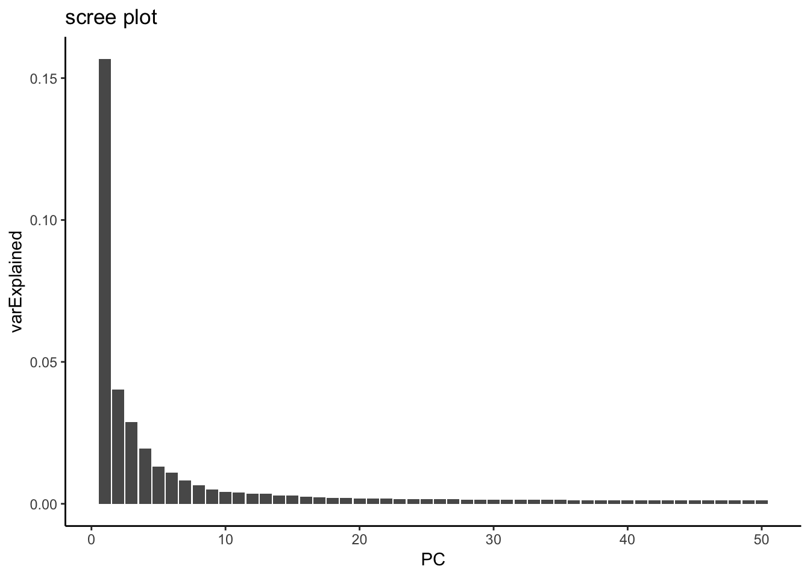
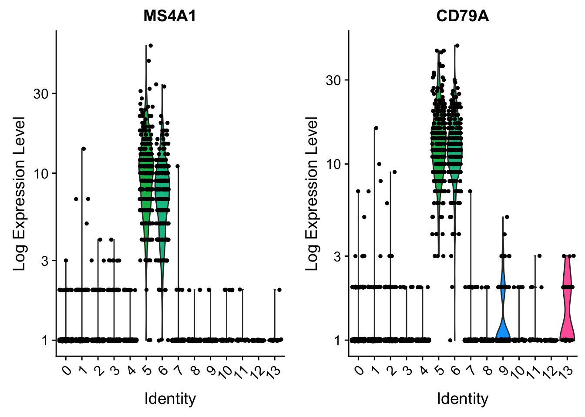

Part 1
Last updated: 2019-07-30
Checks: 7 0
Knit directory: scRNA-seq-workshop-Fall-2019/
This reproducible R Markdown analysis was created with workflowr (version 1.4.0). The Checks tab describes the reproducibility checks that were applied when the results were created. The Past versions tab lists the development history.
Great! Since the R Markdown file has been committed to the Git repository, you know the exact version of the code that produced these results.
Great job! The global environment was empty. Objects defined in the global environment can affect the analysis in your R Markdown file in unknown ways. For reproduciblity it’s best to always run the code in an empty environment.
The command set.seed(20190718) was run prior to running the code in the R Markdown file. Setting a seed ensures that any results that rely on randomness, e.g. subsampling or permutations, are reproducible.
Great job! Recording the operating system, R version, and package versions is critical for reproducibility.
Nice! There were no cached chunks for this analysis, so you can be confident that you successfully produced the results during this run.
Great job! Using relative paths to the files within your workflowr project makes it easier to run your code on other machines.
Great! You are using Git for version control. Tracking code development and connecting the code version to the results is critical for reproducibility. The version displayed above was the version of the Git repository at the time these results were generated.
Note that you need to be careful to ensure that all relevant files for the analysis have been committed to Git prior to generating the results (you can use wflow_publish or wflow_git_commit). workflowr only checks the R Markdown file, but you know if there are other scripts or data files that it depends on. Below is the status of the Git repository when the results were generated:
Ignored files:
Ignored: .DS_Store
Ignored: .Rhistory
Ignored: .Rproj.user/
Ignored: analysis/figure/
Untracked files:
Untracked: data/pbmc10k/
Untracked: data/pbmc5k/
Unstaged changes:
Deleted: docs/.nojekyll
Note that any generated files, e.g. HTML, png, CSS, etc., are not included in this status report because it is ok for generated content to have uncommitted changes.
These are the previous versions of the R Markdown and HTML files. If you’ve configured a remote Git repository (see ?wflow_git_remote), click on the hyperlinks in the table below to view them.
| File | Version | Author | Date | Message |
|---|---|---|---|---|
| html | 89422b2 | Ming Tang | 2019-07-25 | Build site. |
| Rmd | bb12433 | Ming Tang | 2019-07-25 | wflow_publish(c(“analysis/index.Rmd”, “analysis/scRNAseq_workshop_1.Rmd”, |
| html | 8f4aa25 | Ming Tang | 2019-07-23 | Build site. |
| Rmd | 5821efd | Ming Tang | 2019-07-23 | wflow_publish(c(“analysis/scRNAseq_workshop_1.Rmd”, “analysis/scRNAseq_workshop_2.Rmd”)) |
| html | 7bf52d9 | Ming Tang | 2019-07-23 | Build site. |
| Rmd | 2095d3e | Ming Tang | 2019-07-23 | Publish the initial files for myproject |
downloading the data
In this tutorial, we are going to mainly use Seurat package with publicly available datasets. Extensive tutorials with various contexts can be found in https://satijalab.org/seurat/.
Here, in the first part, we are going to analyze a single cell RNAseq dataset product by 10X Genomics and processed through Cell Ranger(TM) pipeline, which generates barcode count matrices.
We will download the public 5k pbmc (Peripheral blood mononuclear cell) data set from 10x genomics.
go to the Terminal tab in your Rstudio.
cd data
mkdir pbmc5k
cd pbmc5k
wget http://cf.10xgenomics.com/samples/cell-exp/3.0.2/5k_pbmc_v3/5k_pbmc_v3_filtered_feature_bc_matrix.tar.gz
tar xvzf 5k_pbmc_v3_filtered_feature_bc_matrix.tar.gz
# remove the .gz to save space
rm 5k_pbmc_v3_filtered_feature_bc_matrix.tar.gzanalyze the data in R
install R packages
now, switch back to R and install the packages we are going to use in this workshop.
install.packages("tidyverse")
install.packages("rmarkdown")
install.packages('Seurat')load the library
library(tidyverse)── Attaching packages ────────────────────────────────────────────────────────────── tidyverse 1.2.1 ──✔ ggplot2 3.1.0 ✔ purrr 0.2.5
✔ tibble 2.0.1 ✔ dplyr 0.8.0.1
✔ tidyr 0.8.2 ✔ stringr 1.3.1
✔ readr 1.3.1 ✔ forcats 0.3.0 ── Conflicts ───────────────────────────────────────────────────────────────── tidyverse_conflicts() ──
✖ dplyr::filter() masks stats::filter()
✖ dplyr::lag() masks stats::lag()library(Seurat)# Load the PBMC dataset
pbmc.data <- Read10X(data.dir = "data/pbmc5k/filtered_feature_bc_matrix/")
# Initialize the Seurat object with the raw (non-normalized data).
pbmc <- CreateSeuratObject(counts = pbmc.data, project = "pbmc5k", min.cells = 3, min.features = 200)
pbmcAn object of class Seurat
18791 features across 4962 samples within 1 assay
Active assay: RNA (18791 features)## getting help
?CreateSeuratObjectif you want to know more details of the Seurat object, you can learn at https://github.com/satijalab/seurat/wiki
# Lets examine a few genes in the first thirty cells
pbmc.data[c("CD3D", "TCL1A", "MS4A1"), 1:30]3 x 30 sparse Matrix of class "dgCMatrix" [[ suppressing 30 column names 'AAACCCAAGCGTATGG', 'AAACCCAGTCCTACAA', 'AAACCCATCACCTCAC' ... ]]
CD3D . . . . 7 . . 16 8 . 12 . . 6 3 6 11 . 3 3 . 6 4 . 1 . . . 11 6
TCL1A . . . . . . . . . . . . . . . . . . . . 1 . . . . . . . . .
MS4A1 . . . 6 . . . . . . 1 . . . . . . . . . 8 . . . . . 3 6 . .The . values in the matrix represent 0s (no molecules detected). Since most values in an scRNA-seq matrix are 0, Seurat uses a sparse-matrix representation whenever possible. This results in significant memory and speed savings for Drop-seq/inDrop/10x data.
Quality control and filtering cells
## check at metadata
head(pbmc@meta.data) orig.ident nCount_RNA nFeature_RNA
AAACCCAAGCGTATGG pbmc5k 13536 3502
AAACCCAGTCCTACAA pbmc5k 12667 3380
AAACCCATCACCTCAC pbmc5k 962 346
AAACGCTAGGGCATGT pbmc5k 5788 1799
AAACGCTGTAGGTACG pbmc5k 13185 2886
AAACGCTGTGTCCGGT pbmc5k 15495 3801# The [[ operator can add columns to object metadata. This is a great place to stash QC stats
pbmc[["percent.mt"]] <- PercentageFeatureSet(pbmc, pattern = "^MT-")
pbmc@meta.data %>% head() orig.ident nCount_RNA nFeature_RNA percent.mt
AAACCCAAGCGTATGG pbmc5k 13536 3502 10.675236
AAACCCAGTCCTACAA pbmc5k 12667 3380 5.620905
AAACCCATCACCTCAC pbmc5k 962 346 53.118503
AAACGCTAGGGCATGT pbmc5k 5788 1799 10.608155
AAACGCTGTAGGTACG pbmc5k 13185 2886 7.819492
AAACGCTGTGTCCGGT pbmc5k 15495 3801 7.460471# Visualize QC metrics as a violin plot
VlnPlot(pbmc, features = c("nFeature_RNA", "nCount_RNA", "percent.mt"), ncol = 3)
| Version | Author | Date |
|---|---|---|
| 7bf52d9 | Ming Tang | 2019-07-23 |
we set the cutoff based on the visualization above. The cutoff is quite subjective.
pbmc <- subset(pbmc, subset = nFeature_RNA > 200 & nFeature_RNA < 5000 & percent.mt < 25)Normalization of the data
By default, we employ a global-scaling normalization method “LogNormalize” that normalizes the feature expression measurements for each cell by the total expression, multiplies this by a scale factor (10,000 by default), and log-transforms the result. Normalized values are stored in pbmc[["RNA"]]@data.
Now, Seurat has a new normalization method called SCTransform. Check out the tutorial here.
pbmc <- NormalizeData(pbmc, normalization.method = "LogNormalize", scale.factor = 10000)feature selection
pbmc <- FindVariableFeatures(pbmc, selection.method = "vst", nfeatures = 2000)
# Identify the 10 most highly variable genes
top10 <- head(VariableFeatures(pbmc), 10)
# plot variable features with and without labels
plot1 <- VariableFeaturePlot(pbmc)
plot2 <- LabelPoints(plot = plot1, points = top10, repel = TRUE)When using repel, set xnudge and ynudge to 0 for optimal resultsCombinePlots(plots = list(plot1, plot2), ncol =1)
Scaling the data
Next, we apply a linear transformation (‘scaling’) that is a standard pre-processing step prior to dimensional reduction techniques like PCA. The ScaleData function:
- Shifts the expression of each gene, so that the mean expression across cells is 0
- Scales the expression of each gene, so that the variance across cells is 1.
Think it as standardize the data. center the mean to 0 and variance to 1. ?scale
This step gives equal weight in downstream analyses, so that highly-expressed genes do not dominate * The results of this are stored in pbmc[["RNA"]]@scale.data
library(stats)
x <- matrix(1:15, ncol = 3)
x [,1] [,2] [,3]
[1,] 1 6 11
[2,] 2 7 12
[3,] 3 8 13
[4,] 4 9 14
[5,] 5 10 15## scale works in a column-wise fashion
centered.x <- scale(x, scale = FALSE)
centered.x [,1] [,2] [,3]
[1,] -2 -2 -2
[2,] -1 -1 -1
[3,] 0 0 0
[4,] 1 1 1
[5,] 2 2 2
attr(,"scaled:center")
[1] 3 8 13## variance is 1
centered.scaled.x <- scale(x)
cov(centered.scaled.x) [,1] [,2] [,3]
[1,] 1 1 1
[2,] 1 1 1
[3,] 1 1 1apply it to the single-cell count matrix
all.genes <- rownames(pbmc)
pbmc <- ScaleData(pbmc, features = all.genes)Centering and scaling data matrixThis can take long for large dataset.
Let’s check the data matrix before and after scaling.
# raw counts
pbmc[["RNA"]]@counts[1:6, 1:6]6 x 6 sparse Matrix of class "dgCMatrix"
AAACCCAAGCGTATGG AAACCCAGTCCTACAA AAACGCTAGGGCATGT
AL627309.1 . . .
AL627309.3 . . .
AL669831.5 1 . 1
FAM87B . . .
LINC00115 . . .
FAM41C . . .
AAACGCTGTAGGTACG AAACGCTGTGTCCGGT AAACGCTGTGTGATGG
AL627309.1 . . .
AL627309.3 . . .
AL669831.5 . 1 .
FAM87B . . .
LINC00115 . . .
FAM41C . . .# library size normalized and log transformed data
pbmc[["RNA"]]@data[1:6, 1:6]6 x 6 sparse Matrix of class "dgCMatrix"
AAACCCAAGCGTATGG AAACCCAGTCCTACAA AAACGCTAGGGCATGT
AL627309.1 . . .
AL627309.3 . . .
AL669831.5 0.5531784 . 1.003463
FAM87B . . .
LINC00115 . . .
FAM41C . . .
AAACGCTGTAGGTACG AAACGCTGTGTCCGGT AAACGCTGTGTGATGG
AL627309.1 . . .
AL627309.3 . . .
AL669831.5 . 0.497965 .
FAM87B . . .
LINC00115 . . .
FAM41C . . .# scaled data
pbmc[["RNA"]]@scale.data[1:6, 1:6] AAACCCAAGCGTATGG AAACCCAGTCCTACAA AAACGCTAGGGCATGT
AL627309.1 -0.09340896 -0.09340896 -0.09340896
AL627309.3 -0.02057466 -0.02057466 -0.02057466
AL669831.5 2.15746090 -0.28992330 4.14962192
FAM87B -0.04240619 -0.04240619 -0.04240619
LINC00115 -0.21936495 -0.21936495 -0.21936495
FAM41C -0.18753443 -0.18753443 -0.18753443
AAACGCTGTAGGTACG AAACGCTGTGTCCGGT AAACGCTGTGTGATGG
AL627309.1 -0.09340896 -0.09340896 -0.09340896
AL627309.3 -0.02057466 -0.02057466 -0.02057466
AL669831.5 -0.28992330 1.91318454 -0.28992330
FAM87B -0.04240619 -0.04240619 -0.04240619
LINC00115 -0.21936495 -0.21936495 -0.21936495
FAM41C -0.18753443 -0.18753443 -0.18753443Scaling is an essential step in the Seurat workflow, but only on genes that will be used as input to PCA. Therefore, the default in ScaleData is only to perform scaling on the previously identified variable features (2,000 by default). To do this, omit the features argument in the previous function call
pbmc <- ScaleData(pbmc, vars.to.regress = "percent.mt")Regressing out percent.mtCentering and scaling data matrixpbmc[["RNA"]]@scale.data[1:6, 1:6] AAACCCAAGCGTATGG AAACCCAGTCCTACAA AAACGCTAGGGCATGT
HES4 -0.2240073 -0.2669980 -0.2245779
ISG15 -0.8049725 -0.8742362 -0.8058917
TNFRSF18 -0.2681255 -0.1699170 -0.2668221
TNFRSF4 -0.2792813 -0.2248457 -0.2785588
MMP23B -0.2296682 -0.1520793 -0.2286385
NADK 2.0405297 0.6329116 -0.5408565
AAACGCTGTAGGTACG AAACGCTGTGTCCGGT AAACGCTGTGTGATGG
HES4 -0.24829747 -0.25135120 -0.2301381
ISG15 0.04326699 -0.06614065 1.4610979
TNFRSF18 -0.21263681 -0.20566084 -0.2541204
TNFRSF4 -0.24852465 -0.24465796 -0.2715184
MMP23B -0.18582978 -0.18031847 6.5839823
NADK -0.60309138 -0.61110368 1.5771045dim(pbmc[["RNA"]]@scale.data)[1] 2000 4595## raw counts and log transformed matrix
dim(pbmc[["RNA"]]@counts)[1] 18791 4595dim(pbmc[["RNA"]]@data)[1] 18791 4595PCA
principle component analysis
Dimenion reduction
Highly recommend this 5 min video on PCA by StatQuest https://www.youtube.com/watch?v=HMOI_lkzW08 and two longer versions by the same person:
https://www.youtube.com/watch?v=_UVHneBUBW0 https://www.youtube.com/watch?v=FgakZw6K1QQ&t=674s
some blog posts I wrote on PCA:
pbmc <- RunPCA(pbmc, features = VariableFeatures(object = pbmc), verbose = FALSE)
p1<- DimPlot(pbmc, reduction = "pca")
p1
| Version | Author | Date |
|---|---|---|
| 7bf52d9 | Ming Tang | 2019-07-23 |
replicate the PCA plot ourselves by ggplot2. All the dimension reduction object (DimReduct) are saved in reductions slot.
# e.g.
pbmc@reductions$pcaA dimensional reduction object with key PC_
Number of dimensions: 50
Projected dimensional reduction calculated: FALSE
Jackstraw run: FALSE
Computed using assay: RNA ## methods that work with the DimReduct object
utils::methods(class = 'DimReduc') [1] [ [[ Cells DefaultAssay
[5] DefaultAssay<- dim dimnames Embeddings
[9] JS JS<- Key Key<-
[13] length Loadings Loadings<- names
[17] print RenameCells RunTSNE ScoreJackStraw
[21] show Stdev subset
see '?methods' for accessing help and source codeEmbeddings(pbmc, reduction = "pca") %>% head() PC_1 PC_2 PC_3 PC_4 PC_5
AAACCCAAGCGTATGG -31.749686 0.3206036 3.2316902 1.4827653 -1.7225612
AAACCCAGTCCTACAA -27.908666 -0.6308573 -0.6949682 0.0113625 0.9581979
AAACGCTAGGGCATGT 4.870671 -20.1894017 -4.7668820 2.4256455 -3.7741203
AAACGCTGTAGGTACG 11.284050 0.9103995 6.7491967 1.1663610 1.4181460
AAACGCTGTGTCCGGT -30.223838 0.6442844 0.6588781 0.1748505 0.7408780
AAACGCTGTGTGATGG 4.534149 14.6942792 -23.1932001 1.1324433 -3.1784629
PC_6 PC_7 PC_8 PC_9 PC_10
AAACCCAAGCGTATGG -7.1866345 -0.1867499 0.4895503 -1.0006664 -0.3164823
AAACCCAGTCCTACAA 4.0870951 1.7671871 0.6306350 -1.2547806 0.2369933
AAACGCTAGGGCATGT 0.8191033 2.2543990 -2.5586787 0.3368964 -4.3477827
AAACGCTGTAGGTACG 0.2487368 -0.5382114 2.1719260 -2.6107720 -0.1532170
AAACGCTGTGTCCGGT 0.3340276 3.7774882 3.7079025 1.5477937 -0.9396352
AAACGCTGTGTGATGG -2.8402285 -6.6551671 6.0846685 -0.1622600 -1.4871283
PC_11 PC_12 PC_13 PC_14 PC_15
AAACCCAAGCGTATGG -2.1493213 4.96183470 0.08345166 0.03259621 1.8707355
AAACCCAGTCCTACAA -0.8504207 -7.86946696 4.40407254 1.11051682 0.8346257
AAACGCTAGGGCATGT -3.2665381 0.02841664 2.30566753 0.08737054 0.6239217
AAACGCTGTAGGTACG -2.5508150 -1.22586296 1.42497983 1.04336412 1.0285061
AAACGCTGTGTCCGGT 0.1429822 -1.03932058 1.34592056 2.49038139 -3.8596368
AAACGCTGTGTGATGG -0.6984480 2.19378584 8.13208735 -5.58531619 -1.5305344
PC_16 PC_17 PC_18 PC_19 PC_20
AAACCCAAGCGTATGG -3.3349121 -4.8736727 0.4050456 -3.27418950 0.4253961
AAACCCAGTCCTACAA 1.2316544 -1.6176927 -0.4979777 -0.95399649 -0.1487146
AAACGCTAGGGCATGT 1.2750432 -0.3143667 -0.2387007 0.44034095 0.1070249
AAACGCTGTAGGTACG -0.4942870 0.7227728 2.6200439 -0.08299444 1.1609031
AAACGCTGTGTCCGGT 0.1689827 -4.1873678 1.3026329 -3.34110228 -1.6543379
AAACGCTGTGTGATGG -2.1043566 1.7191834 3.5031758 -3.46892800 -0.4835799
PC_21 PC_22 PC_23 PC_24 PC_25
AAACCCAAGCGTATGG 0.38826054 -0.3388280 -0.3102357 0.9225296 1.1493121
AAACCCAGTCCTACAA -2.18038292 -0.1142006 0.4071930 -2.0467116 -0.5891186
AAACGCTAGGGCATGT -0.04228991 -0.1907637 -0.7797804 -0.6903384 -0.9518594
AAACGCTGTAGGTACG -0.10282751 -0.6989734 1.0428906 -0.4114054 0.3179832
AAACGCTGTGTCCGGT 2.29995811 0.1878039 -1.1157439 0.3539011 0.6983157
AAACGCTGTGTGATGG -1.33740175 4.6367785 2.2547311 -2.3806864 2.6768123
PC_26 PC_27 PC_28 PC_29 PC_30
AAACCCAAGCGTATGG -0.4425588 0.890669 0.5351597 3.4978863 0.4321732
AAACCCAGTCCTACAA -0.6206207 0.359402 1.6197689 -0.1211780 1.1727331
AAACGCTAGGGCATGT -0.7771488 1.069164 -1.1476447 0.6790176 -3.6754527
AAACGCTGTAGGTACG -0.4084921 2.529226 -0.2994368 0.7076177 0.2165411
AAACGCTGTGTCCGGT -0.4387852 1.078763 -0.6951068 -0.5594053 0.1534528
AAACGCTGTGTGATGG -0.1878793 -2.729595 -0.1927358 3.0574628 0.3569375
PC_31 PC_32 PC_33 PC_34 PC_35
AAACCCAAGCGTATGG 2.3599874 -0.7960682 -0.1130762 -0.7351672 1.5970824
AAACCCAGTCCTACAA -0.9501188 -1.0153775 3.2736110 -1.1229799 0.8342103
AAACGCTAGGGCATGT -5.0701162 0.7809748 -0.6555875 2.2242139 -2.5146564
AAACGCTGTAGGTACG 0.4291666 -1.1757092 -0.3580585 -2.9761781 0.5126442
AAACGCTGTGTCCGGT 2.6041436 0.7491606 -1.9289241 0.5012251 -0.9122437
AAACGCTGTGTGATGG 0.4450735 0.3828157 -2.7881259 0.8745306 -3.4854203
PC_36 PC_37 PC_38 PC_39 PC_40
AAACCCAAGCGTATGG -0.31048972 -0.16548588 -0.9157047 1.9625766 0.6139102
AAACCCAGTCCTACAA -0.05712522 -0.28466122 0.8316528 -0.1601389 -2.6650656
AAACGCTAGGGCATGT 2.42056818 -0.03451399 -1.1460427 0.7833359 1.0263942
AAACGCTGTAGGTACG 1.57055203 0.36080882 0.2593557 -1.9434860 0.6268397
AAACGCTGTGTCCGGT -0.68994548 -1.00970824 0.1498123 0.6736817 -0.3685838
AAACGCTGTGTGATGG -1.13799138 0.21677362 0.7602060 0.4963482 0.8885865
PC_41 PC_42 PC_43 PC_44 PC_45
AAACCCAAGCGTATGG 2.2924768 -0.2957856 3.0658281 -1.04838959 4.2313103
AAACCCAGTCCTACAA -2.6461173 -2.5570040 -0.6854854 0.83321424 -2.5032691
AAACGCTAGGGCATGT -1.1891535 3.0783306 0.8626610 -0.05894781 -0.3569243
AAACGCTGTAGGTACG -0.9844561 0.3379814 1.2725794 0.88184031 -1.1407465
AAACGCTGTGTCCGGT -1.8434911 0.6358968 1.8239590 0.16793147 1.9540159
AAACGCTGTGTGATGG 0.2104292 -1.5236830 1.0845757 0.18224377 -0.5292818
PC_46 PC_47 PC_48 PC_49 PC_50
AAACCCAAGCGTATGG 0.8286060 0.4110526 -0.2684463 0.4881312 1.1611914
AAACCCAGTCCTACAA 4.0798398 0.7602264 -0.8053542 -2.2931836 -0.4184246
AAACGCTAGGGCATGT 0.6105477 -0.7581442 0.9540361 -1.7912117 0.6176227
AAACGCTGTAGGTACG 0.1363981 0.1479181 0.4921191 0.1698165 -1.2546990
AAACGCTGTGTCCGGT -1.3998959 0.1247547 -0.9317956 1.7330908 2.2860100
AAACGCTGTGTGATGG 1.5306216 -0.2381258 -0.8683929 0.1394903 1.8223171p2<- Embeddings(pbmc, reduction = "pca") %>%
as.data.frame()%>%
ggplot(aes(x = PC_1, y = PC_2)) +
geom_point(color = "red", size = 0.5) +
theme_classic()
p2
| Version | Author | Date |
|---|---|---|
| 7bf52d9 | Ming Tang | 2019-07-23 |
CombinePlots(plots = list(p1, p2))Warning in align_plots(plotlist = plots, align = align, axis = axis):
Complex graphs cannot be vertically aligned unless axis parameter is set
properly. Placing graphs unaligned.
| Version | Author | Date |
|---|---|---|
| 7bf52d9 | Ming Tang | 2019-07-23 |
Determine How many PCs to include for downstream analysis
To overcome the extensive technical noise in any single feature for scRNA-seq data, Seurat clusters cells based on their PCA scores, with each PC essentially representing a ‘metafeature’ that combines information across a correlated feature set. The top principal components therefore represent a robust compression of the dataset. However, how many componenets should we choose to include? 10? 20? 100?
In Macosko et al, we implemented a resampling test inspired by the JackStraw procedure. We randomly permute a subset of the data (1% by default) and rerun PCA, constructing a ‘null distribution’ of feature scores, and repeat this procedure. We identify ‘significant’ PCs as those who have a strong enrichment of low p-value features.
# NOTE: This process can take a long time for big datasets, comment out for expediency. More
# approximate techniques such as those implemented in ElbowPlot() can be used to reduce
# computation time, takes 10 mins for this data set
pbmc <- JackStraw(pbmc, num.replicate = 100, dims = 50)
pbmc <- ScoreJackStraw(pbmc, dims = 1:50)
JackStrawPlot(pbmc, dims = 1:30)An alternative heuristic method generates an ‘Elbow plot’: a ranking of principle components based on the percentage of variance explained by each one (ElbowPlot function). In this example, we can observe an ‘elbow’ around PC20-30, suggesting that the majority of true signal is captured in the first 20 PCs.
ElbowPlot(pbmc, ndims = 50)
| Version | Author | Date |
|---|---|---|
| 7bf52d9 | Ming Tang | 2019-07-23 |
variance explained by each PC
hint from https://github.com/satijalab/seurat/issues/982
mat <- Seurat::GetAssayData(pbmc, assay = "RNA", slot = "scale.data")
pca <- pbmc[["pca"]]
# Get the total variance:
total_variance <- sum(matrixStats::rowVars(mat))
eigValues = (pca@stdev)^2 ## EigenValues
varExplained = eigValues / total_variance
varExplained %>% enframe(name = "PC", value = "varExplained" ) %>%
ggplot(aes(x = PC, y = varExplained)) +
geom_bar(stat = "identity") +
theme_classic() +
ggtitle("scree plot")
### this is what Seurat is plotting: standard deviation
pca@stdev %>% enframe(name = "PC", value = "Standard Deviation" ) %>%
ggplot(aes(x = PC, y = `Standard Deviation`)) +
geom_point() +
theme_classic()
| Version | Author | Date |
|---|---|---|
| 7bf52d9 | Ming Tang | 2019-07-23 |
Cluster the cells
Seurat v3 applies a graph-based clustering approach, building upon initial strategies in (Macosko et al) Briefly, these methods embed cells in a graph structure - for example a K-nearest neighbor (KNN) graph, with edges drawn between cells with similar feature expression patterns, and then attempt to partition this graph into highly interconnected ‘quasi-cliques’ or ‘communities’.
As in PhenoGraph, we first construct a KNN graph based on the euclidean distance in PCA space, and refine the edge weights between any two cells based on the shared overlap in their local neighborhoods (Jaccard similarity). This step is performed using the FindNeighbors function, and takes as input the previously defined dimensionality of the dataset.
To cluster the cells, we next apply modularity optimization techniques such as the Louvain algorithm (default) or SLM [SLM, Blondel et al., Journal of Statistical Mechanics], to iteratively group cells together, with the goal of optimizing the standard modularity function. The FindClusters function implements this procedure, and contains a resolution parameter that sets the ‘granularity’ of the downstream clustering, with increased values leading to a greater number of clusters. We find that setting this parameter between 0.4-1.2 typically returns good results for single-cell datasets of around 3K cells. Optimal resolution often increases for larger datasets
pbmc <- FindNeighbors(pbmc, dims = 1:20)Computing nearest neighbor graphComputing SNNpbmc <- FindClusters(pbmc, resolution = 0.5)Modularity Optimizer version 1.3.0 by Ludo Waltman and Nees Jan van Eck
Number of nodes: 4595
Number of edges: 166042
Running Louvain algorithm...
Maximum modularity in 10 random starts: 0.8998
Number of communities: 14
Elapsed time: 0 seconds# Look at cluster IDs of the first 5 cells
head(Idents(pbmc), 5)AAACCCAAGCGTATGG AAACCCAGTCCTACAA AAACGCTAGGGCATGT AAACGCTGTAGGTACG
1 1 5 0
AAACGCTGTGTCCGGT
1
Levels: 0 1 2 3 4 5 6 7 8 9 10 11 12 13Run non-linear dimensional reduction (UMAP/tSNE)
Seurat offers several non-linear dimensional reduction techniques, such as tSNE and UMAP (as opposed to PCA which is a linear dimensional reduction technique), to visualize and explore these datasets. The goal of these algorithms is to learn the underlying manifold of the data in order to place similar cells together in low-dimensional space. Cells within the graph-based clusters determined above should co-localize on these dimension reduction plots. As input to the UMAP and tSNE, we suggest using the same PCs as input to the clustering analysis.
pbmc <- RunUMAP(pbmc, dims = 1:20)
pbmc<- RunTSNE(pbmc, dims = 1:20)
## after we run UMAP and TSNE, there are more entries in the reduction slot
str(pbmc@reductions)List of 3
$ pca :Formal class 'DimReduc' [package "Seurat"] with 8 slots
.. ..@ cell.embeddings : num [1:4595, 1:50] -31.75 -27.91 4.87 11.28 -30.22 ...
.. .. ..- attr(*, "dimnames")=List of 2
.. .. .. ..$ : chr [1:4595] "AAACCCAAGCGTATGG" "AAACCCAGTCCTACAA" "AAACGCTAGGGCATGT" "AAACGCTGTAGGTACG" ...
.. .. .. ..$ : chr [1:50] "PC_1" "PC_2" "PC_3" "PC_4" ...
.. ..@ feature.loadings : num [1:2000, 1:50] -0.014365 -0.000161 0.005058 -0.013235 -0.058571 ...
.. .. ..- attr(*, "dimnames")=List of 2
.. .. .. ..$ : chr [1:2000] "FCER1A" "PPBP" "IGLC2" "C1QA" ...
.. .. .. ..$ : chr [1:50] "PC_1" "PC_2" "PC_3" "PC_4" ...
.. ..@ feature.loadings.projected: num[0 , 0 ]
.. ..@ assay.used : chr "RNA"
.. ..@ stdev : num [1:50] 15.65 7.92 6.7 5.5 4.53 ...
.. ..@ key : chr "PC_"
.. ..@ jackstraw :Formal class 'JackStrawData' [package "Seurat"] with 4 slots
.. .. .. ..@ empirical.p.values : num[0 , 0 ]
.. .. .. ..@ fake.reduction.scores : num[0 , 0 ]
.. .. .. ..@ empirical.p.values.full: num[0 , 0 ]
.. .. .. ..@ overall.p.values : num[0 , 0 ]
.. ..@ misc :List of 1
.. .. ..$ total.variance: num 1563
$ umap:Formal class 'DimReduc' [package "Seurat"] with 8 slots
.. ..@ cell.embeddings : num [1:4595, 1:2] 15.41 17.17 21.09 3.56 15.45 ...
.. .. ..- attr(*, "dimnames")=List of 2
.. .. .. ..$ : chr [1:4595] "AAACCCAAGCGTATGG" "AAACCCAGTCCTACAA" "AAACGCTAGGGCATGT" "AAACGCTGTAGGTACG" ...
.. .. .. ..$ : chr [1:2] "UMAP_1" "UMAP_2"
.. ..@ feature.loadings : num[0 , 0 ]
.. ..@ feature.loadings.projected: num[0 , 0 ]
.. ..@ assay.used : chr "RNA"
.. ..@ stdev : num(0)
.. ..@ key : chr "UMAP_"
.. ..@ jackstraw :Formal class 'JackStrawData' [package "Seurat"] with 4 slots
.. .. .. ..@ empirical.p.values : num[0 , 0 ]
.. .. .. ..@ fake.reduction.scores : num[0 , 0 ]
.. .. .. ..@ empirical.p.values.full: num[0 , 0 ]
.. .. .. ..@ overall.p.values : num[0 , 0 ]
.. ..@ misc : list()
$ tsne:Formal class 'DimReduc' [package "Seurat"] with 8 slots
.. ..@ cell.embeddings : num [1:4595, 1:2] -7.89 10.06 -32.41 -21.91 1.57 ...
.. .. ..- attr(*, "dimnames")=List of 2
.. .. .. ..$ : chr [1:4595] "AAACCCAAGCGTATGG" "AAACCCAGTCCTACAA" "AAACGCTAGGGCATGT" "AAACGCTGTAGGTACG" ...
.. .. .. ..$ : chr [1:2] "tSNE_1" "tSNE_2"
.. ..@ feature.loadings : num[0 , 0 ]
.. ..@ feature.loadings.projected: num[0 , 0 ]
.. ..@ assay.used : chr "RNA"
.. ..@ stdev : num(0)
.. ..@ key : chr "tSNE_"
.. ..@ jackstraw :Formal class 'JackStrawData' [package "Seurat"] with 4 slots
.. .. .. ..@ empirical.p.values : num[0 , 0 ]
.. .. .. ..@ fake.reduction.scores : num[0 , 0 ]
.. .. .. ..@ empirical.p.values.full: num[0 , 0 ]
.. .. .. ..@ overall.p.values : num[0 , 0 ]
.. ..@ misc : list()DimPlot(pbmc, reduction = "umap", label = TRUE)
| Version | Author | Date |
|---|---|---|
| 7bf52d9 | Ming Tang | 2019-07-23 |
## now let's visualize in the TSNE space
DimPlot(pbmc, reduction = "tsne")
| Version | Author | Date |
|---|---|---|
| 7bf52d9 | Ming Tang | 2019-07-23 |
## now let's label the clusters in the PCA space
DimPlot(pbmc, reduction = "pca")
| Version | Author | Date |
|---|---|---|
| 7bf52d9 | Ming Tang | 2019-07-23 |
Tsne/UMAP is for visualization purpose only. The clusters are defined by the graph-based clustering which was implemented by FindClusters. We then color label the cells by the cluster id on the UMAP space.
We can reproduce the UMAP plot by ggplot ourselves.
## there are many slots for the DimReduct object
pbmc@reductions$umap@cell.embeddings %>% head() UMAP_1 UMAP_2
AAACCCAAGCGTATGG 15.409229 14.386008
AAACCCAGTCCTACAA 17.171036 17.526758
AAACGCTAGGGCATGT 21.088911 1.469897
AAACGCTGTAGGTACG 3.561784 14.602443
AAACGCTGTGTCCGGT 15.452778 16.914408
AAACGCTGTGTGATGG 4.704505 -1.752043## this gives you the same results
Embeddings(pbmc, reduction = "umap") %>% head() UMAP_1 UMAP_2
AAACCCAAGCGTATGG 15.409229 14.386008
AAACCCAGTCCTACAA 17.171036 17.526758
AAACGCTAGGGCATGT 21.088911 1.469897
AAACGCTGTAGGTACG 3.561784 14.602443
AAACGCTGTGTCCGGT 15.452778 16.914408
AAACGCTGTGTGATGG 4.704505 -1.752043Embeddings(pbmc, reduction = "umap") %>%
as.data.frame() %>%
ggplot(aes(x = UMAP_1, y = UMAP_2)) +
geom_point(size = 0.5) +
theme_classic(base_size = 14)## color by cluster
(umap_df<- bind_cols(seurat_clusters = pbmc@meta.data$seurat_clusters,
Embeddings(pbmc, reduction = "umap") %>% as.data.frame()))# A tibble: 4,595 x 3
seurat_clusters UMAP_1 UMAP_2
<fct> <dbl> <dbl>
1 1 15.4 14.4
2 1 17.2 17.5
3 5 21.1 1.47
4 0 3.56 14.6
5 1 15.5 16.9
6 4 4.70 -1.75
7 4 4.51 0.586
8 3 4.67 5.38
9 1 17.6 17.6
10 2 6.00 6.05
# … with 4,585 more rows# ggplot2 to reproduce
ggplot(umap_df, aes(x = UMAP_1, y = UMAP_2)) +
geom_point(aes(color = seurat_clusters), size = 0.5) +
theme_classic(base_size = 14) Finding differentially expressed features (cluster biomarkers)
Seurat can help you find markers that define clusters via differential expression. By default, it identifes positive and negative markers of a single cluster (specified in ident.1), compared to all other cells. FindAllMarkers automates this process for all clusters, but you can also test groups of clusters vs. each other, or against all cells.
# find all markers of cluster 1
cluster1.markers <- FindMarkers(pbmc, ident.1 = 1, min.pct = 0.25)
head(cluster1.markers, n = 5) p_val avg_logFC pct.1 pct.2 p_val_adj
S100A8 0 4.143277 1.000 0.123 0
S100A9 0 4.125020 1.000 0.233 0
LYZ 0 3.202571 1.000 0.395 0
VCAN 0 2.577781 0.992 0.071 0
MNDA 0 2.564347 1.000 0.109 0# find all markers distinguishing cluster 5 from clusters 0 and 3
cluster5.markers <- FindMarkers(pbmc, ident.1 = 5, ident.2 = c(0, 3), min.pct = 0.25)
head(cluster5.markers, n = 5) p_val avg_logFC pct.1 pct.2 p_val_adj
CD79A 0 2.673512 1.000 0.045 0
HLA-DQA1 0 2.533452 0.993 0.012 0
MS4A1 0 2.438141 0.993 0.029 0
HLA-DQB1 0 2.118244 0.982 0.031 0
BANK1 0 1.992629 0.982 0.006 0Finding all marker genes takes long in this step. let’s watch the PCA video while Seurat is working hard.
# we only have 2 CPUs reserved for each one.
# Seurat V3.0.2 parallel processing read more https://satijalab.org/seurat/v3.0/future_vignette.html
#plan("multiprocess", workers = 2)
# find markers for every cluster compared to all remaining cells, report only the positive ones
pbmc.markers <- FindAllMarkers(pbmc, only.pos = TRUE, min.pct = 0.25, logfc.threshold = 0.25)Calculating cluster 0Calculating cluster 1Calculating cluster 2Calculating cluster 3Calculating cluster 4Calculating cluster 5Calculating cluster 6Calculating cluster 7Calculating cluster 8Calculating cluster 9Calculating cluster 10Calculating cluster 11Calculating cluster 12Calculating cluster 13pbmc.markers %>% group_by(cluster) %>% top_n(n = 2, wt = avg_logFC)# A tibble: 28 x 7
# Groups: cluster [14]
p_val avg_logFC pct.1 pct.2 p_val_adj cluster gene
<dbl> <dbl> <dbl> <dbl> <dbl> <fct> <chr>
1 0. 0.943 0.856 0.227 0. 0 CCR7
2 0. 0.889 0.802 0.195 0. 0 TRABD2A
3 0. 4.14 1 0.123 0. 1 S100A8
4 0. 4.13 1 0.233 0. 1 S100A9
5 1.25e-224 1.26 0.925 0.43 2.35e-220 2 IL7R
6 2.46e-198 1.23 0.644 0.146 4.62e-194 2 KLRB1
7 1.29e-269 2.00 0.988 0.209 2.42e-265 3 CCL5
8 1.20e-164 1.61 0.576 0.085 2.26e-160 3 GZMK
9 0. 3.46 0.993 0.119 0. 4 GNLY
10 1.98e-288 2.90 1 0.224 3.72e-284 4 NKG7
# … with 18 more rowsVisualize marker genes
VlnPlot (shows expression probability distributions across clusters), and FeaturePlot (visualizes feature expression on a tSNE or PCA plot) are our most commonly used visualizations. We also suggest exploring RidgePlot, CellScatter, and DotPlot as additional methods to view your dataset.
VlnPlot(pbmc, features = c("MS4A1", "CD79A"))
| Version | Author | Date |
|---|---|---|
| 7bf52d9 | Ming Tang | 2019-07-23 |
## understanding the matrix of data slots
pbmc[["RNA"]]@data[c("MS4A1", "CD79A"), 1:30]2 x 30 sparse Matrix of class "dgCMatrix" [[ suppressing 30 column names 'AAACCCAAGCGTATGG', 'AAACCCAGTCCTACAA', 'AAACGCTAGGGCATGT' ... ]]
MS4A1 . . 2.430651 . . . . . . 0.4230566 . . . . . . . . 2.490309
CD79A . . 2.696092 . . . . . . . 0.5792753 . . . . . . . 2.696737
MS4A1 . . . . . 1.903265 . . . . 2.611375
CD79A . . . . . 2.592775 . . . . 3.165980pbmc[["RNA"]]@scale.data[c("MS4A1", "CD79A"), 1:30] AAACCCAAGCGTATGG AAACCCAGTCCTACAA AAACGCTAGGGCATGT AAACGCTGTAGGTACG
MS4A1 -0.4068538 -0.3388261 2.687411 -0.3684175
CD79A -0.4121278 -0.3687476 2.549010 -0.3876176
AAACGCTGTGTCCGGT AAACGCTGTGTGATGG AAACGCTTCCTATGGA AAACGCTTCTAGGCAT
MS4A1 -0.3635853 -0.3971526 -0.3560082 -0.3511574
CD79A -0.3845362 -0.4059415 -0.3797043 -0.3766111
AAAGAACAGACTAGAT AAAGAACAGGTAGTCG AAAGAACCAAGAGAGA AAAGAACCACCGTCTT
MS4A1 -0.3676667 0.1481426 -0.392136 -0.2927071
CD79A -0.3871388 -0.4015458 0.233356 -0.3393383
AAAGAACGTAAGAACT AAAGAACGTACCTTCC AAAGAACTCACCTGGG AAAGAACTCGGAACTT
MS4A1 -0.4124918 -0.4525260 -0.3628941 -0.3703045
CD79A -0.4157231 -0.4412523 -0.3840954 -0.3888209
AAAGGATAGCACTCGC AAAGGATGTGCCGAAA AAAGGATTCCCGAACG AAAGGATTCTTTGATC
MS4A1 -0.3758118 -0.4359815 2.760538 -0.3399273
CD79A -0.3923328 -0.4307021 2.547933 -0.3694498
AAAGGGCAGGATTTCC AAAGGGCGTCATGGCC AAAGGGCGTGACATCT AAAGGGCTCATGAGTC
MS4A1 -0.3916844 -0.3940305 -0.3494149 -0.4274362
CD79A -0.4024545 -0.4039506 -0.3754999 -0.4252529
AAAGGTACAACCACAT AAAGGTAGTCGACTGC AAAGTCCCAGAGACTG AAAGTCCCATGTTCGA
MS4A1 2.022910 -0.3549116 -0.3422712 -0.3381941
CD79A 2.439814 -0.3790051 -0.3709445 -0.3683446
AAAGTCCGTGAATAAC AAAGTCCTCTTACCGC
MS4A1 -0.4079680 2.909723
CD79A -0.4128383 3.060088pbmc[["RNA"]]@counts[c("MS4A1", "CD79A"), 1:30]2 x 30 sparse Matrix of class "dgCMatrix" [[ suppressing 30 column names 'AAACCCAAGCGTATGG', 'AAACCCAGTCCTACAA', 'AAACGCTAGGGCATGT' ... ]]
MS4A1 . . 6 . . . . . . 1 . . . . . . . . 8 . . . . . 6 . . . . 15
CD79A . . 8 . . . . . . . 1 . . . . . . . 10 . . . . . 13 . . . . 27# you can plot raw counts as well
VlnPlot(pbmc, features = c("MS4A1", "CD79A"), slot = "counts", log = TRUE)
| Version | Author | Date |
|---|---|---|
| 7bf52d9 | Ming Tang | 2019-07-23 |
VlnPlot(pbmc, features = c("MS4A1", "CD79A"), slot = "scale.data")FeaturePlot.
plot the expression intensity overlaid on the Tsne/UMAP plot.
FeaturePlot(pbmc, features = c("MS4A1", "GNLY", "CD3E", "CD14", "FCER1A", "FCGR3A", "LYZ", "PPBP", "CD8A"))
| Version | Author | Date |
|---|---|---|
| 7bf52d9 | Ming Tang | 2019-07-23 |
ggplot2 plot the data points in the order of the rows present in the dataframe. high-expressed cells can be masked by the (gray) low expressed cells.
p<- FeaturePlot(pbmc, features = "CD14")
## before reordering
p
| Version | Author | Date |
|---|---|---|
| 7bf52d9 | Ming Tang | 2019-07-23 |
p_after<- p
### after reordering
p_after$data <- p_after$data[order(p_after$data$CD14),]
CombinePlots(plots = list(p, p_after))There is a pacakge to deal with this type of overplotting problem. https://github.com/SaskiaFreytag/schex
DoHeatmap generates an expression heatmap for given cells and features. In this case, we are plotting the top 20 markers (or all markers if less than 20) for each cluster.
top10 <- pbmc.markers %>% group_by(cluster) %>% top_n(n = 10, wt = avg_logFC)
DoHeatmap(pbmc, features = top10$gene) + NoLegend()Warning in DoHeatmap(pbmc, features = top10$gene): The following features
were omitted as they were not found in the scale.data slot for the RNA
assay: NUCB2, LUC7L3, CSKMT, INTS6, NKTR, HEXIM1, MT-ND5, MALAT1, MT-CYB,
NOSIP, SARAF, TCF7, LDHBsave the Seurat object into a file
saveRDS(pbmc, "data/pbmc5k/pbmc_5k_v3.rds")
sessionInfo()R version 3.5.1 (2018-07-02)
Platform: x86_64-apple-darwin15.6.0 (64-bit)
Running under: macOS High Sierra 10.13.6
Matrix products: default
BLAS: /Library/Frameworks/R.framework/Versions/3.5/Resources/lib/libRblas.0.dylib
LAPACK: /Library/Frameworks/R.framework/Versions/3.5/Resources/lib/libRlapack.dylib
locale:
[1] en_US.UTF-8/en_US.UTF-8/en_US.UTF-8/C/en_US.UTF-8/en_US.UTF-8
attached base packages:
[1] stats graphics grDevices utils datasets methods base
other attached packages:
[1] Seurat_3.0.2 forcats_0.3.0 stringr_1.3.1 dplyr_0.8.0.1
[5] purrr_0.2.5 readr_1.3.1 tidyr_0.8.2 tibble_2.0.1
[9] ggplot2_3.1.0 tidyverse_1.2.1
loaded via a namespace (and not attached):
[1] Rtsne_0.15 colorspace_1.4-1 ggridges_0.5.1
[4] rprojroot_1.3-2 fs_1.2.6 rstudioapi_0.8
[7] listenv_0.7.0 npsurv_0.4-0 ggrepel_0.8.0
[10] fansi_0.4.0 lubridate_1.7.4 xml2_1.2.0
[13] codetools_0.2-16 splines_3.5.1 R.methodsS3_1.7.1
[16] lsei_1.2-0 knitr_1.21 jsonlite_1.6
[19] workflowr_1.4.0 broom_0.5.1 ica_1.0-2
[22] cluster_2.0.7-1 png_0.1-7 R.oo_1.22.0
[25] sctransform_0.2.0 compiler_3.5.1 httr_1.4.0
[28] backports_1.1.3 assertthat_0.2.0 Matrix_1.2-15
[31] lazyeval_0.2.1 cli_1.0.1 htmltools_0.3.6
[34] tools_3.5.1 rsvd_1.0.0 igraph_1.2.2
[37] gtable_0.2.0 glue_1.3.0 RANN_2.6
[40] reshape2_1.4.3 Rcpp_1.0.0 cellranger_1.1.0
[43] gdata_2.18.0 ape_5.2 nlme_3.1-137
[46] gbRd_0.4-11 lmtest_0.9-36 xfun_0.4
[49] globals_0.12.4 rvest_0.3.2 irlba_2.3.2
[52] gtools_3.8.1 future_1.10.0 MASS_7.3-51.1
[55] zoo_1.8-4 scales_1.0.0 hms_0.4.2
[58] parallel_3.5.1 RColorBrewer_1.1-2 yaml_2.2.0
[61] reticulate_1.10 pbapply_1.3-4 gridExtra_2.3
[64] stringi_1.2.4 caTools_1.17.1.1 bibtex_0.4.2
[67] matrixStats_0.54.0 Rdpack_0.10-1 SDMTools_1.1-221
[70] rlang_0.3.1 pkgconfig_2.0.2 bitops_1.0-6
[73] evaluate_0.12 lattice_0.20-38 ROCR_1.0-7
[76] htmlwidgets_1.3 labeling_0.3 cowplot_0.9.3
[79] tidyselect_0.2.5 plyr_1.8.4 magrittr_1.5
[82] R6_2.3.0 gplots_3.0.1 generics_0.0.2
[85] pillar_1.3.1 haven_2.0.0 whisker_0.3-2
[88] withr_2.1.2 fitdistrplus_1.0-11 survival_2.43-3
[91] future.apply_1.0.1 tsne_0.1-3 modelr_0.1.2
[94] crayon_1.3.4 utf8_1.1.4 KernSmooth_2.23-15
[97] plotly_4.8.0 rmarkdown_1.11 grid_3.5.1
[100] readxl_1.2.0 data.table_1.11.8 git2r_0.23.0
[103] metap_1.0 digest_0.6.18 R.utils_2.7.0
[106] munsell_0.5.0 viridisLite_0.3.0